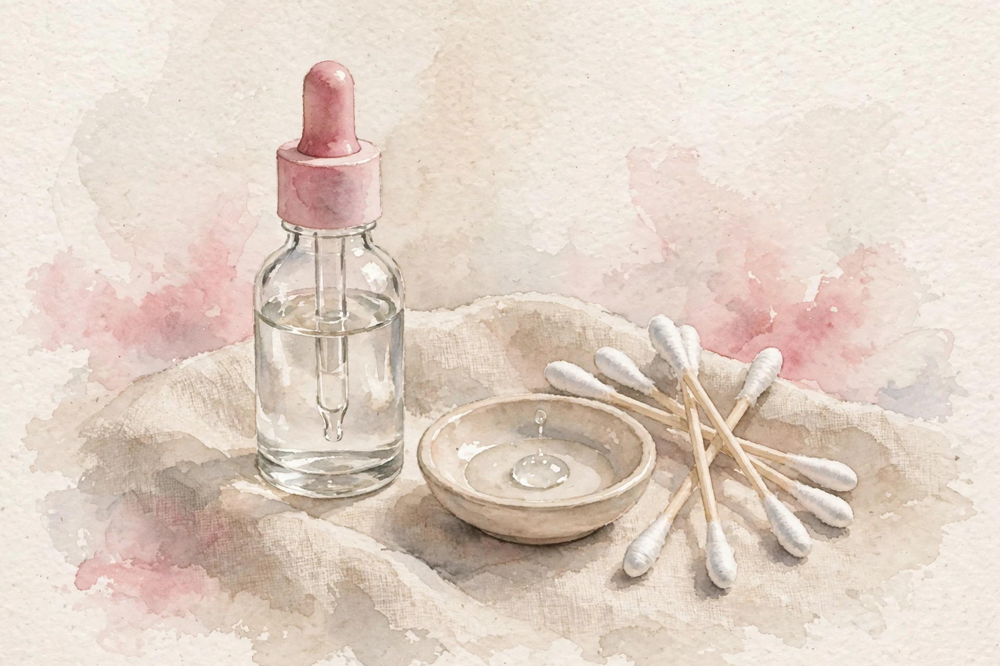

トップ ＞ スキンケア ＞ 初めて使うアイテムの少量テストの進め方
初めて使うアイテムの少量テストの進め方

初めて使うアイテムは、いきなり顔全体に使うのではなく、まず少量で試すのが基本です。化粧品の世界では一般に「パッチテスト」という考え方が知られていますが、家庭でできる範囲の、シンプルな確認手順として整理します。施術の現場でも、新しい商材は小さな範囲から試すのが鉄則です。
テストする場所と量の目安
場所は、目立ちにくく、状態を確認しやすいところを選びます。二の腕の内側や、耳の後ろ、あごの下などが候補です。洗って清潔にした肌に、少量を薄く塗ります。量は、10円玉くらいの範囲に薄くのばせる程度で十分です。広い範囲にたっぷり塗る必要はありません。
塗った直後だけでなく、時間を置いてからの様子も見ます。その日の入浴で一度流れますから、気になる場合は翌日も同じ場所に少量を塗り、数日かけて様子を見る方法もあります。大切なのは、一度に判断を急がないことです。
様子を見るときのポイント
見るポイントは「いつもと違うかどうか」です。赤みが出ていないか、かゆみはないか、ひりつきやほてり感はないか。塗った場所と、塗っていない場所を見比べると、違いが分かりやすくなります。写真を撮る必要はありませんが、気になった点は日付と一緒にメモしておくと、後で振り返れます。
問題なさそうだと感じたら、次は顔の狭い範囲、たとえば頬の一部から始めて、徐々に範囲を広げていく進め方が穏やかです。いきなり全体に使うより、段階を踏むほうが、変化に気づきやすくなります。
異常を感じたときは
テストの段階で異常を感じたら、そのアイテムは顔には使わない判断をしてください。「もったいない」と感じるかもしれませんが、肌の調子を崩してからでは、元に戻すのにもっと時間がかかります。判断に迷うときの基準はシンプルで、「いつもと違う反応があったら止める」です。
少量テストは家庭でできる目安の確認であり、アレルギーの有無を確定できるものではありません。赤み・かゆみ・腫れなどの異常が出た場合は使用を中止し、症状が続くときは皮膚科などの専門家に相談してください。過去に化粧品で異常が出たことがある方は、とくに慎重に進めてください。
テストを終えたあとの進め方
少量テストで問題なさそうだと感じても、顔に使い始める最初の数日は、使う範囲と回数を控えめにするのが穏やかです。たとえば、最初は夜だけ、頬の範囲だけ、というように条件を絞り、数日かけて通常の使い方に寄せていきます。段階を踏むことで、変化があったときに「どの段階で起きたか」が分かります。
また、テストをした日付と場所は、開封日の記録と一緒に書き留めておくと便利です。「いつ、どこで試して、問題なかったか」という記録は、そのアイテムを使う期間全体の安心材料になります。家族が同じアイテムを使いたい場合は、その人自身の肌で改めて少量から試すのが原則です。人の肌は、それぞれ違うものとして扱ってください。
少量テストを行った日は、開封日の記録に「テスト済み」と添えておくと、後から見返したときに経緯が分かります。新しいアイテムを足す場面では、この記録が「いつ、どう試したか」の証拠になります。家族に使い方を伝えるときも、記録があると話が早くなります。
なお、テストは一度きりの行事ではありません。季節が変わって肌の状態が変化したときや、体調がいつもと違うときは、使い慣れたアイテムでも様子を見ながら使う意識が大切です。慎重さは、ケアを長く楽しむための技術のひとつです。
テストを行う場所の選び方には、もうひとつ注意点があります。日焼けした直後の肌や、体調がいつもと違うときは、テストの結果が読みにくくなります。テストは、なるべく普段通りの状態のときに、普段通りの場所で行うのが原則です。条件がそろってこそ、結果に意味が出ます。
また、複数の新しいアイテムを順番に試す場合は、1つのテストが終わってから次に進みます。同時にテストすると、変化の理由が追えません。焦らず1つずつ、という進め方は、新しいアイテムを足すときの考え方と共通しています。
少量テストは、臆病さではありません。長く付き合うアイテムを選ぶための、確実な手順です。手間に感じるかもしれませんが、この手順が、後の安心を買っているのだと考えてください。
セラフィナ「少しずつ試すのが、いちばんの安心だね。急がないことが大事だよ」